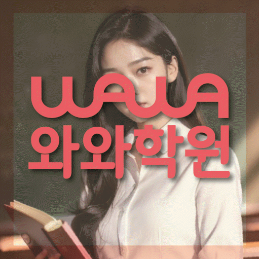

내신·수능 진단
내신, 수능, 시간 관리 중 지금 어디가 부족한지 먼저 나누어 확인합니다.
HIGH SCHOOL COACHING
서울 송파구 위례신도시 고등학생을 위한 고등학생학원 안내입니다. 내신·수능 균형 진단, 오답 관리, 학년별 학습 우선순위를 상담 전에 확인할 수 있습니다.



와와학습코칭센터 위례점 기준으로 위례신도시 학생의 상담 범위를 확인합니다. 실제 방문·상담 전에는 주소와 이동 동선을 함께 확인해 주세요.
핵심 요약
위례신도시에서 고등학생학원을 고르실 때는 내신과 수능 중 지금 필요한 비중이 무엇인지부터 살펴보시는 것이 좋습니다.
내신, 수능, 시간 관리 중 지금 어디가 부족한지 먼저 나누어 확인합니다.
틀린 문제를 유형별로 정리해 같은 실수가 반복되지 않도록 관리합니다.
고1~고3 전환 시기마다 필요한 부분이 달라 학년에 맞춰 순서를 정합니다.
학원 선택 가이드
같은 실수를 반복하는 학생일수록 오답을 다시 채점하는 데서 끝내지 않고, 왜 틀렸는지 원인을 나누어 확인하는 과정이 중요합니다.
와와학습코칭센터 위례점은 서울 송파구 위례신도시 학생을 기준으로 상담을 진행하며, 위례한빛고, 복정고, 문현고 학생들이 주로 문의합니다. 실제 등록 전에는 경기 성남시 수정구 위례광장로 320 315호를 기준으로 이동 동선과 상담 가능 시간을 확인하는 것이 좋습니다.
고등학생의 학습은 한 번에 완성되지 않습니다. 내신, 수능, 시간 관리를 오가며 조금씩 채워가는 과정이라는 점을 기억해 주세요.
AEO ANSWER
문제집만 풀리다가 학원을 고민 중이라면?
혼자 채점하는 학습으로는 오답 원인을 짚어주기 어려워, 함께 확인해 주는 과정이 도움이 됩니다.
학원을 고를 때 무엇을 먼저 봐야 할까요?
화려한 커리큘럼보다 학생이 지금 어디서 막히는지 구체적으로 확인해 주는지를 먼저 보시는 것이 좋습니다.
내신은 괜찮은데 모의고사만 어렵다면?
학교 시험과 수능형 문제는 출제 방식이 달라, 실전 유형에 맞춘 별도 훈련이 필요합니다.
성적에 대한 자신감이 없어 보이는 학생이라면?
작은 목표부터 성취를 쌓아가도록 학습량을 조절해 자신감을 회복하는 것이 우선입니다.
LOCAL & STUDENT FIT
위례신도시 생활권 학생의 학교 진도와 눈높이에 맞춰 고등 학습 관리 방향을 상담합니다.
학년과 목표에 따라 내신, 수능, 시간 관리 중 시작 지점을 다르게 잡습니다.
모의고사 점수가 들쭉날쭉한 학생, 내신과 수능 비중 조절이 어려운 학생, 시간 관리가 약한 학생에게 적합합니다.
진학 전 중학교: 위례한빛중, 위례중앙중, 송례중 · 고등학교: 위례한빛고, 복정고, 문현고
수업 가능 학교 참고
일반 학원과의 차이
일반적인 학원 운영 방식과 채움학습의 고등학생 관리 방식을 같은 기준으로 비교했습니다.
CENTER INFO
서울 송파구 위례신도시 학생 상담 기준으로 안내합니다.
경기 성남시 수정구 위례광장로 320 315호
성남교육지원청 등록 제6054호
TUITION
서울 지역 기준으로 안내되는 학습료입니다. 실제 금액은 상담 시 학생 과정과 교육청 신고 기준에 따라 확인해 주세요.
서울 지역 기준 · 1회 90~100분 수업
| 횟수 | 초등 | 중등 | 고등 |
|---|---|---|---|
| 주 3회 | 249,000원 | 266,000원 | 299,000원 |
| 주 4회 | 319,000원 | 341,000원 | 384,000원 |
| 주 5회 | 389,000원 | 416,000원 | 469,000원 |
* 학습료는 지역, 수업 조건, 교육청 신고 기준에 따라 일부 차이가 있을 수 있습니다.
CHECKLIST
시험이나 문제풀이 시 시간 배분이 어떻게 되는지 확인합니다.
다니던 학원이나 교재가 있었다면 진도와 방식을 확인합니다.
위례신도시 학생이 다니는 학교의 시험 범위와 출제 경향을 확인합니다.
영어, 수학, 국어 중 지금 가장 급한 과목을 정합니다.
FAQ
특별히 준비하실 것은 없습니다. 최근 모의고사나 내신 시험지가 있으면 참고가 됩니다.
내신 대비를 우선으로 하면서, 여유가 있는 과목은 다음 학기 선행을 함께 진행합니다.
실전과 비슷한 환경에서 시간 배분을 연습해 시험 중 페이스를 조절하도록 돕습니다.
남은 기간과 목표를 함께 확인한 뒤, 우선순위가 높은 취약 단원부터 집중적으로 보완합니다.
혼자 채점만 하는 학습으로는 오답 원인을 짚기 어려워, 함께 확인해 주는 과정이 도움이 됩니다.
네, 현재 상태와 목표를 확인한 뒤 필요한 학습 방향을 안내해 드립니다.
PARENT REVIEW
국어 독해가 약했는데 지문 구조부터 다시 잡아주셨습니다.
오답 노트를 과목별로 정리해 주셔서 반복되는 실수가 줄었습니다.
문과 이과 전환을 고민할 때 현실적으로 조언해 주셨습니다.
시험 기간에는 확실히 더 꼼꼼하게 챙겨주시는 게 느껴집니다.
학교 시험 범위에 맞춰 챙겨주셔서 내신이 안정적으로 나옵니다.
소수 인원이라 질문하기 편하다고 합니다.
근처 학원페이지
같은 지역의 다른 카테고리와, 가까운 지역 페이지로 이동할 수 있도록 정리했습니다.